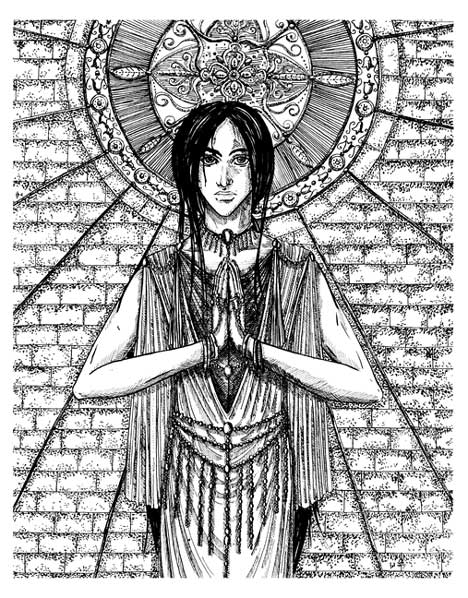

L'ammontare dei punti preghiera di cui ogni chierico dispone dipende fondamentalmente dal suo livello e dal suo punteggio di saggezza come schematizzato nella seguente tabella. Nella tabella è indicato anche il numero massimo di incantesimi del medesimo livello di potere che il chierico può memorizzare spendendo i propri punti preghiera (si noti che gli orison memorizzati singolarmente al costo di 1 punto preghiera, a differenza della memorizzazione della magia orison, non sono considerati come magie di primo livello di potere):
| LIVELLO | PUNTI PREGHIERA | Accesso agli incantesimi | Massimo numero di magie per livello |
| 1° | 4 | 1° livello di potere generale | 3 |
| 2° | 8 | 1° livello di potere speciale | 4 |
| 3° | 15 | 2° livello di potere generale | 5 |
| 4° | 25 | 2° livello di potere speciale | 5 |
| 5° | 40 | 3° livello di potere generale | 6 |
| 6° | 55 | 3° livello di potere speciale | 6 |
| 7° | 70 | 4° livello di potere generale | 6 |
| 8° | 90 | 4° livello di potere speciale | 7 |
| 9° | 125 | 5° livello di potere generale | 7 |
| 10° | 160 | 5° livello di potere speciale | 7 |
| 11° | 200 | 6° livello di potere generale | 8 |
| 12° | 240 | 6° livello di potere speciale | 8 |
| 13° | 290 | 6° livello di potere speciale | 9 |
| 14° | 340 | 7° livello di potere generale | 9 |
| 15° | 400 | 7° livello di potere speciale | 9 |
| 16° | 460 | 7° livello di potere speciale | 10 |
| 17° | 530 | 7° livello di potere speciale | 10 |
| 18° | 600 | 7° livello di potere speciale | 11 |
| 19° | 675 | 7° livello di potere speciale | 11 |
| 20° | 750 | 7° livello di potere speciale | 12 |
| 21° e + | +75 per lvl. | 7° livello di potere speciale | 13 |
| SAGGEZZA | 1° Livello di esperienza | 2° Livello di esperienza | 3° Livello di esperienza | 4° Livello di esperienza | 5° Livello di esperienza | 6° Livello di esperienza | 7° + Livello di esperienza |
| 13 | +4 punti p. | +4 punti p. | +4 punti p. | +4 punti p. | +4 punti p. | +4 punti p. | +4 punti p. |
| 14 | +4 punti p. | +6 punti p. | +8 punti p. | +8 punti p. | +8 punti p. | +8 punti p. | +8 punti p. |
| 15 | +6 punti p. | +8 punti p. | +10 punti p. | +12 punti p. | +14 punti p. | +14 punti p. | +14 punti p. |
| 16 | +8 punti p. | +10 punti p. | +14 punti p. | +18 punti p. | +20 punti p. | +20 punti p. | +20 punti p. |
| 17 | +8 punti p. | +10 punti p. | +15 punti p. | +20 punti p. | +25 punti p. | +30 punti p. | +30 punti p. |
| 18 | +8 punti p. | +12 punti p. | +18 punti p. | +22 punti p. | +28 punti p. | +32 punti p. | +38 punti p. |
| 19+ | +10 punti p. | +14 punti p. | +20 punti p. | +24 punti p. | +30 punti p. | +34 punti p. | +40 punti p. |
Il costo per memorizzare ogni singolo incantesimo dipende dal suo livello di potere, il chierico può anche decidere di memorizzare "magie libere" spendendo il doppio dei punti preghiera e potendo lanciare un qualsiasi incantesimo a cui ha accesso per quel livello di potere (specificandolo al momento del lancio invece di individuarlo al momento della memorizzazione). Si noti che gli orisono possono sempre essere scelti al momento del lancio fra tutti gli orison ai quali il chierico ha accesso senza che il chierico debba pagare il doppio la loro memorizzazione.
| LIVELLO DI POTERE | COSTO IN PUNTI PREGHIERA | COSTO PER INCANTESIMO LIBERO |
| Orison Singolo | --- | 1 |
| 1° | 4 | 8 |
| 2° | 6 | 12 |
| 3° | 10 | 20 |
| 4° | 15 | 30 |
| 5° | 22 | 44 |
| 6° | 30 | 60 |
| 7° | 40 | 80 |